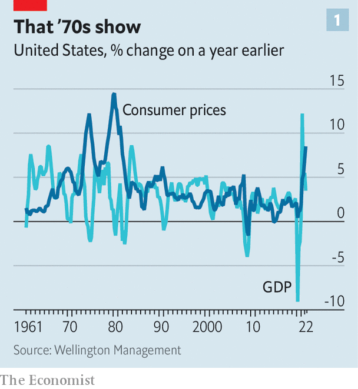
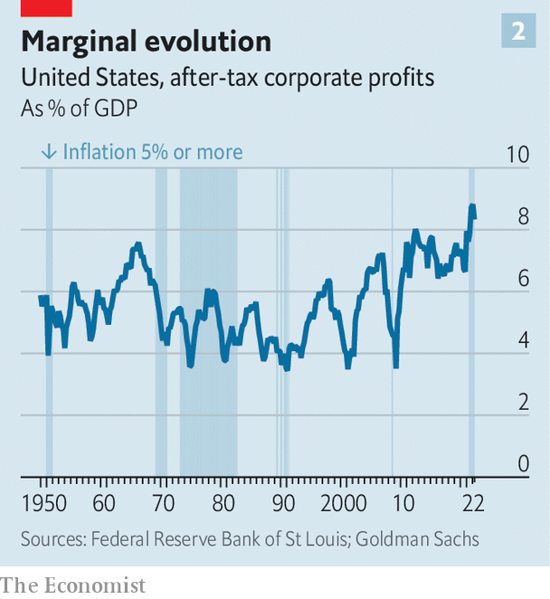

For the leaders of America Inc, high inflation is unwelcome. It is also unfamiliar. Warren Buffett, 91, the oldest boss in the s&p 500 index of big firms, most recently warned about the dangers of rising prices in his annual shareholder letter for 2011. The average chief executive of a company in the index, aged a stripling 58, had not started university in 1979 when Paul Volcker, inflation’s enemy-in-chief, became chairman of the Federal Reserve. By the time the average boss began working the rise of globalised capitalism was ushering in an era of low inflation and high profits (see chart 1). Their firms’ share prices rose between the global financial crisis of 2007-09 and the covid-19 pandemic, a decade of rock-bottom inflation.
Listen to this story.Enjoy more audio and podcasts on iOS or Android.
Listen to this story
Save time by listening to our audio articles as you multitask

Inflation will stay high for some time yet. On June 7th the World Bank warned that “several years of above-average inflation and below-average growth now seem likely.” A new study by Marijn Bolhuis, Judd Cramer and Lawrence Summers finds that if you measure inflation consistently, today’s rate is not that far off the peak in 1980. As the past creeps up on the future, “stagflation” is preoccupying the denizens of corner offices. Today’s executives may think of themselves as battle-hardened—they have experienced a financial crisis and a pandemic. However, the stagflationary challenge requires a different toolkit that borrows from the past and also involves new tricks.

The primary task for any management team is to defend margins and cashflow, which investors favour over revenue growth when things get dicey. That will require fighting harder down in the trenches of the income statement. Although a rise in margins as inflation first picked up last year led politicians to denounce corporate “greedflation”, after-tax profits in fact tend to come down as a share of gdp when price rises persist, based on the experience of all American firms since 1950 (see chart 2). To create shareholder value in this environment companies must increase their cashflows in real terms. That means a combination of cutting expenses and passing cost inflation on to customers without dampening sales volumes.
Cost-cutting will not be easy. The prices of commodities, transport and labour remain elevated and most companies are price-takers in those markets. Supply-chain constraints have begun to ease a bit and may keep easing in the coming months. But disruptions will almost certainly continue. In April Apple lamented that the industry-wide computer-chip shortage is expected to create a $4bn-8bn “constraint” for the iPhone-maker in the current quarter.
The input bosses can control most easily is labour. After months of frenzied hiring, companies are looking to protect margins by getting more from their workers—or getting the same amount from fewer of them. The labour market remains drum-tight: in America wages are up by more than 5% year on year and in April lay-offs hit a record low. But, in some corners, the pandemic hiring binge to meet pent-up demand is being unwound.
American bosses are again demonstrating that they are less squeamish about lay-offs than their European counterparts. In a memo sent to employees this month Elon Musk revealed plans to trim salaried headcount at Tesla, his electric-car company, by 10%. Digital darlings, many of which had boomed during the pandemic, collectively sacked nearly 17,000 workers in May alone. After tempting workers with increased pay and perks, in the latest quarterly earnings calls more American ceos have been talking up automation and labour efficiencies.
In the current climate, though, hard-headed (and hard-hearted) cost control won’t be enough to maintain profitability. The remaining cost inflation must be pushed through to customers. Many businesses are about to learn the difficulty of raising prices without crimping demand. The companies that wield this superpower often share a few attributes: weak competition, customers’ inability to delay or avoid the purchase, or inflation-linked revenue streams. A strong brand also helps. Starbucks boasted on an earnings call in May that, despite caffeinated price rises for its beverages, it has struggled to keep up with “relentless demand”.
Recent data hint at softer consumer sentiment, however. This makes it riskier for firms to roll out frequent price increases. Amber lights are blinking, from McDonald’s, which has speculated about “increased value sensitivity” among burger-munchers, to Verizon, which detected customer “slowness” in the most recent quarter. The ability to push through price increases as customers tighten their belts requires careful management. In contrast to the last high-inflation era, managers can use real-time algorithmic price setting, constantly experimenting and adjusting as consumers respond. Nonetheless, all firms will still have to take a longer-term view on how long high prices will last and on the limits of what their customers will tolerate. That is finger-in-the-wind stuff.
Even if they keep revenues and costs under control, ceos are discovering what their predecessors knew all too well: inflation plays havoc with the balance-sheet. That requires even tighter control of working capital (the value of inventories and what is owed by customers minus what is owed to suppliers). Many firms have misjudged demand for their products. Walmart lost almost a fifth of its market value, or around $80bn, in mid-May, after it reported a cashflow squeeze caused by an excess build-up of inventories, which rose by a third year on year. On June 7th its smaller retailing rival, Target, issued a warning that its operating margin will fall from 5.3% last quarter to 2% in the current one, as it discounts goods to clear its excess inventories. Payment cycles—ie, when a firm pays suppliers and is paid by customers—become more important, too, as the purchasing power of cash delivered tomorrow withers in inflation’s heat.
All this makes a business’s performance more difficult to assess. For example, calculations of return on capital look more impressive with an inflated numerator (present returns) and the denominator (capital invested in the past) in old dollars. Between 1979 and 1986, during the last bout of high inflation, American firms were required by law to present income statements that were adjusted for rising prices. This edict is unlikely to be revived. But even as bosses boast of higher nominal revenue growth, investment and compensation decisions should account for such artificial tailwinds. Just ask Mr Buffett. In his letter to shareholders for 1980 he reminded them that profits must rise in proportion to increases in the price level without an increase in capital employed, lest the firm starts “chewing up” investors’ capital. His missive to investors in 2023 may need to carry the same message. ■
For more expert analysis of the biggest stories in economics, business and markets, sign up to Money Talks, our weekly newsletter.